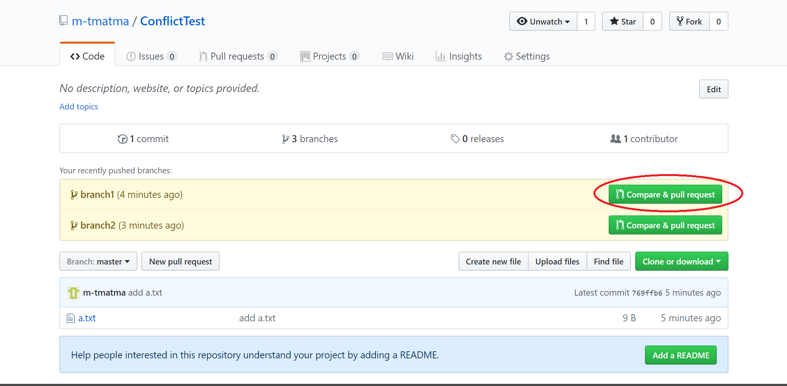
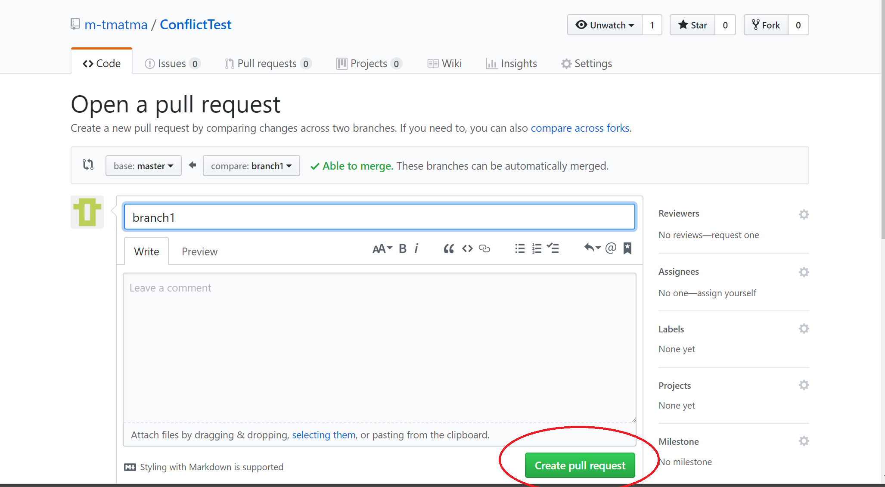
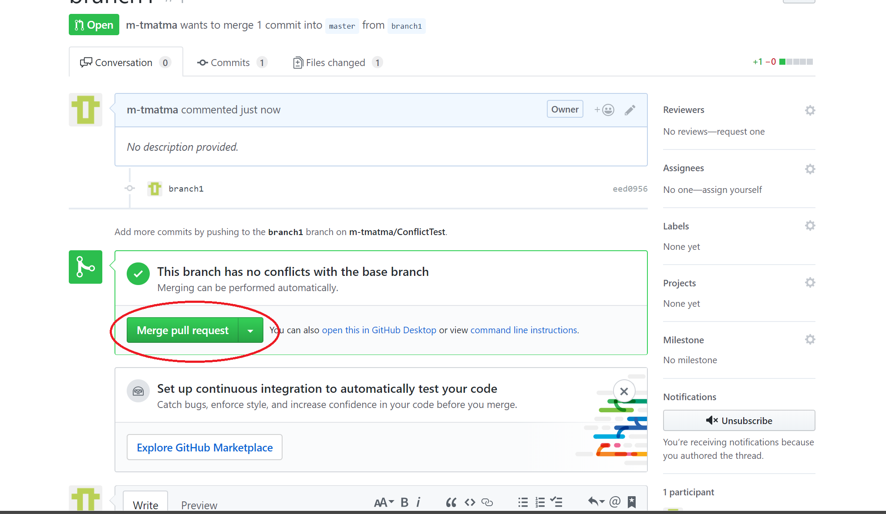
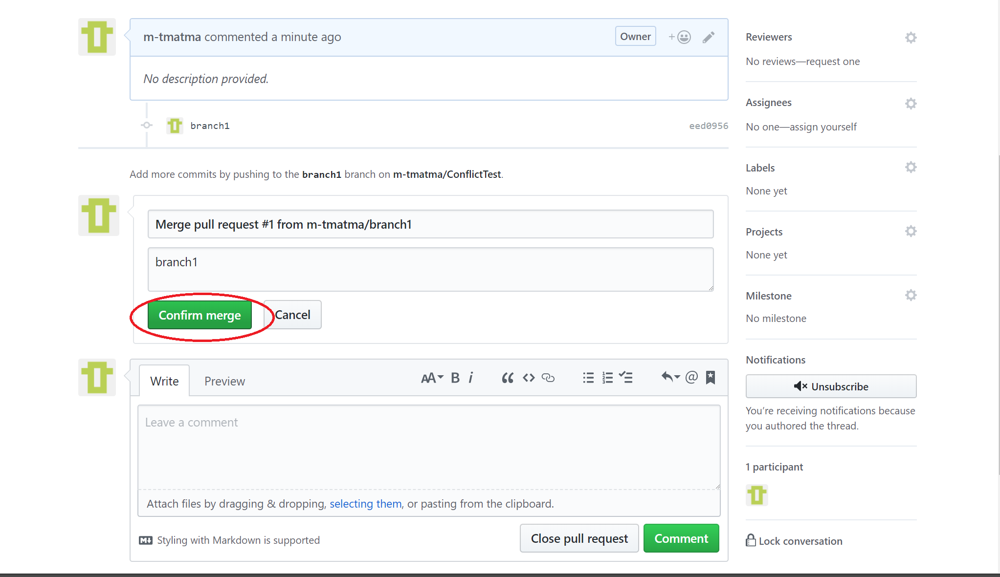
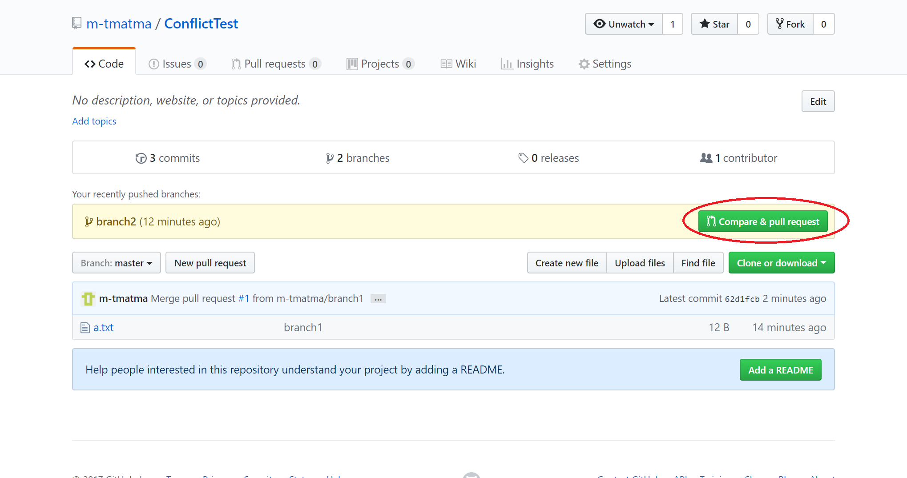
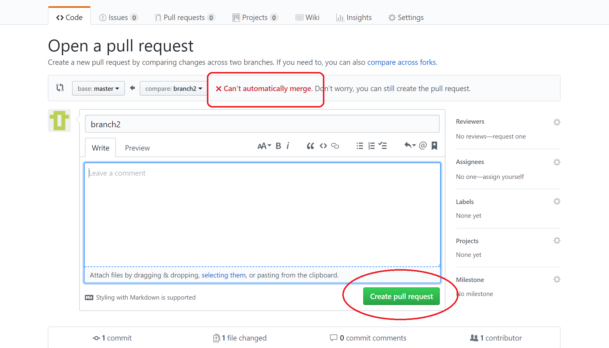
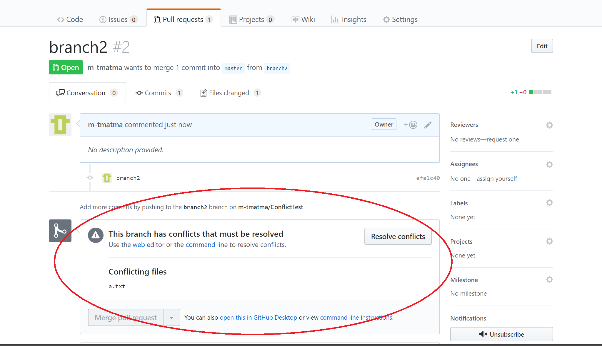
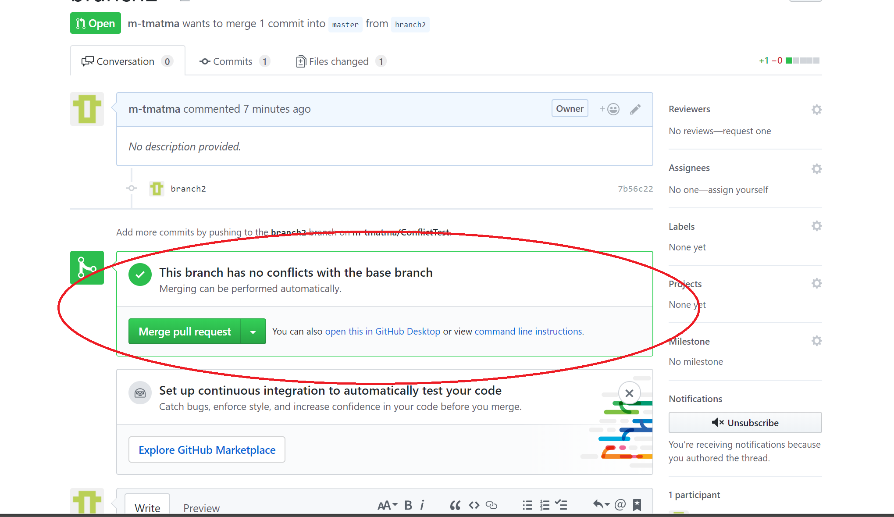

$Date: 2018-07-07 06:49:13 +0900 (2018/07/07 (土)) $
$Revision: 1347 $
git コンフリクト解決 (rebase)
概略
コンフリクトを rebase を使って解消する方法を説明します。
-
対象リポジトリをチェックアウトします。
git checkout branch2
-
以下で rebase します。
git pull --rebase origin master
-
コンフリクトが発生するので手動でコンフリクトを解消して git add します。
git add a.txt
-
以下で rebase を続行します。
git rebase --continue
-
以下でリモートリポジトリに強制的に push します。
git push origin branch2 --force
具体例
リポジトリ作成
https://github.com/new でリポジトリを作成します。
リポジトリclone
git clone https://github.com/m-tmatma/ConflictTest.git
cd ConflictTest
コマンド出力
C:\gitwork\Work>git clone https://github.com/m-tmatma/ConflictTest.git
Cloning into 'ConflictTest'...
warning: You appear to have cloned an empty repository.
C:\gitwork\Work>cd ConflictTest
初期登録
echo 1 > a.txt
echo 2 >> a.txt
echo 3 >> a.txt
git add a.txt
git commit -m "add a.txt"
git push origin master
コマンド出力
-
ファイルの修正
C:\gitwork\Work\ConflictTest>echo 1 > a.txt
C:\gitwork\Work\ConflictTest>echo 2 >> a.txt
C:\gitwork\Work\ConflictTest>echo 3 >> a.txt
-
変更をステージング
C:\gitwork\Work\ConflictTest>git add a.txt
-
コミット
C:\gitwork\Work\ConflictTest>git commit -m "add a.txt"
[master (root-commit) 769ffb6] add a.txt
1 file changed, 3 insertions(+)
create mode 100644 a.txt
-
push
C:\gitwork\Work\ConflictTest>git push origin master
Counting objects: 3, done.
Writing objects: 100% (3/3), 222 bytes | 222.00 KiB/s, done.
Total 3 (delta 0), reused 0 (delta 0)
To https://github.com/m-tmatma/ConflictTest.git
* [new branch] master -> master
一つ目のブランチ作成 & push
git checkout master
git pull
git checkout -b branch1
echo 1 >> a.txt
git add a.txt
git commit -m "branch1"
git push --set-upstream origin branch1
コマンド出力
-
master をチェックアウト
C:\gitwork\Work\ConflictTest>git checkout master
Already on 'master'
Your branch is up to date with 'origin/master'.
-
最新に更新
C:\gitwork\Work\ConflictTest>git pull
Already up to date.
-
ブランチを作成
C:\gitwork\Work\ConflictTest>git checkout -b branch1
Switched to a new branch 'branch1'
-
既存ファイルの最後に追加
C:\gitwork\Work\ConflictTest>echo 1 >> a.txt
-
変更をステージング
C:\gitwork\Work\ConflictTest>git add a.txt
-
コミット
C:\gitwork\Work\ConflictTest>git commit -m "branch1"
[branch1 eed0956] branch1
1 file changed, 1 insertion(+)
-
push
C:\gitwork\Work\ConflictTest>git push --set-upstream origin branch1
Counting objects: 3, done.
Writing objects: 100% (3/3), 253 bytes | 126.00 KiB/s, done.
Total 3 (delta 0), reused 0 (delta 0)
To https://github.com/m-tmatma/ConflictTest.git
* [new branch] branch1 -> branch1
Branch 'branch1' set up to track remote branch 'branch1' from 'origin'.
２つ目のブランチ作成 & push
git checkout master
git pull
git checkout -b branch2
echo 2 >> a.txt
git add a.txt
git commit -m "branch2"
git push --set-upstream origin branch2
コマンド出力
-
master をチェックアウト
C:\gitwork\Work\ConflictTest>git checkout master
Switched to branch 'master'
Your branch is up to date with 'origin/master'.
-
最新に更新
C:\gitwork\Work\ConflictTest>git pull
Already up to date.
-
ブランチを作成
C:\gitwork\Work\ConflictTest>git checkout -b branch2
Switched to a new branch 'branch2'
-
既存ファイルの最後に追加
C:\gitwork\Work\ConflictTest>echo 2 >> a.txt
-
変更をステージング
C:\gitwork\Work\ConflictTest>git add a.txt
-
コミット
C:\gitwork\Work\ConflictTest>git commit -m "branch2"
[branch2 efa1c40] branch2
1 file changed, 1 insertion(+)
-
push
C:\gitwork\Work\ConflictTest>git push --set-upstream origin branch2
Counting objects: 3, done.
Writing objects: 100% (3/3), 251 bytes | 251.00 KiB/s, done.
Total 3 (delta 0), reused 0 (delta 0)
To https://github.com/m-tmatma/ConflictTest.git
* [new branch] branch2 -> branch2
Branch 'branch2' set up to track remote branch 'branch2' from 'origin'.
一つ目のブランチのプルリクエストを作成
-
"Compare & pull request" のボタンを押します。

-
"create pull request" のボタンを押します。

-
"Merge pull request" のボタンを押します。

-
"Confirm merge" のボタンを押します。

-
"Delete branch" のボタンを押します。
二つ目のブランチのプルリクエストを作成
-
"Compare & pull request" のボタンを押します。

-
"can't automatically merge" と表示されていますが
"create pull request" のボタンを押します。

-
自動的にコンフリクトを解消できないと出ているのでローカルでコンフリクトを解消します。

rebase によるコンフリクト解消
-
checkout
git checkout branch2
-
rebase
git pull --rebase origin master
-
エディタでコンフリクトを解消する
-
コンフリクトの解決を git に知らせる
git add a.txt
-
rebase 再開
git rebase --continue
-
強制 push
git push origin branch2 --force
コマンド出力
-
checkout
C:\gitwork\Work\ConflictTest>git checkout branch2
Already on 'branch2'
Your branch is up to date with 'origin/branch2'.
-
git pull (念のため多分不要)
C:\gitwork\Work\ConflictTest>git pull
remote: Counting objects: 1, done.
remote: Total 1 (delta 0), reused 0 (delta 0), pack-reused 0
Unpacking objects: 100% (1/1), done.
From https://github.com/m-tmatma/ConflictTest
769ffb6..62d1fcb master -> origin/master
Already up to date.
-
git pull による rebase
C:\gitwork\Work\ConflictTest>git pull --rebase origin master
From https://github.com/m-tmatma/ConflictTest
* branch master -> FETCH_HEAD
First, rewinding head to replay your work on top of it...
Applying: branch2
.git/rebase-apply/patch:9: trailing whitespace.
2
warning: 1 line adds whitespace errors.
error: Failed to merge in the changes.
Using index info to reconstruct a base tree...
M a.txt
Falling back to patching base and 3-way merge...
Auto-merging a.txt
CONFLICT (content): Merge conflict in a.txt
Patch failed at 0001 branch2
The copy of the patch that failed is found in: .git/rebase-apply/patch
Resolve all conflicts manually, mark them as resolved with
"git add/rm ", then run "git rebase --continue".
You can instead skip this commit: run "git rebase --skip".
To abort and get back to the state before "git rebase", run "git rebase --abort".
-
コンフリクト解消を git に知らせる
C:\gitwork\Work\ConflictTest>git add a.txt
-
強制的に push する
C:\gitwork\Work\ConflictTest>git push origin branch2 --force
Counting objects: 3, done.
Writing objects: 100% (3/3), 257 bytes | 257.00 KiB/s, done.
Total 3 (delta 0), reused 0 (delta 0)
To https://github.com/m-tmatma/ConflictTest.git
+ efa1c40...7b56c22 branch2 -> branch2 (forced update)
コンフリクトが解消されていることの確認
コンフリクトが解消されています。
